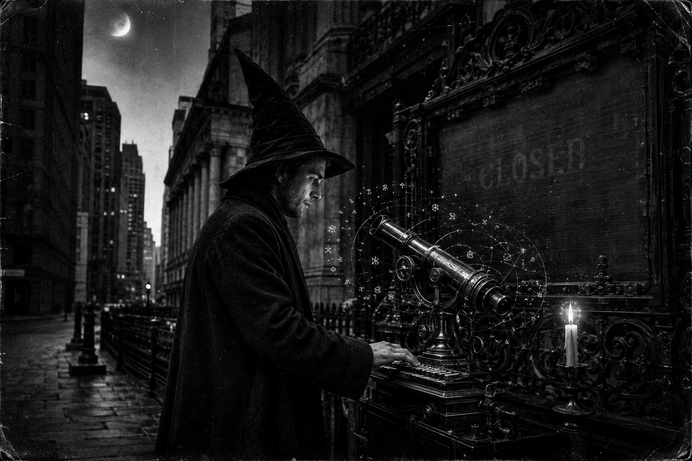

Morning Edition
6:00 AM CDTFinance & Markets
The Board Keeps the Sabbath
NYSE, Nasdaq, and the bond market are dark for Labor Day. Friday's last compile still stands: the S&P 500 at 7,718.60, down 29; the Dow near 53,414, down 272; the Nasdaq at 26,506.99, down 77. Tuesday, September 8, is the next open. Inherit the print. Do not merge on a closed board. The holiday is not a bug. It is a rest the tape actually honors.
Source: USA Today, Nasdaq, and TVNewsCheck, September 4–7, 2026CVC Wrote Ten Billion Into Secondaries
CVC Secondary Partners closed Secondary Opportunities Fund VI at $10 billion. That nearly doubles the $5.8 billion 2023 vehicle. More than 200 limited partners showed up. About half were new to the SOF books. Mid-market buyout secondaries. LP portfolios and GP-led deals. Rob Lucas called it a twenty-year track record meeting a market that still wants liquidity while exits stay slow. Dry powder is not a merge. It is a promise to wait for the right brick.
Source: CVC and Dealroom, September 3–7, 2026The Strait Still Prices the Barrel
Equities sleep. Crude does not. WTI held near $92. Brent sat near $97. Murban printed above $103 in the Tokyo morning. Hormuz traffic is the risk premium. A closed stock board does not cancel an oil compile. Read the barrel. Then rest the rest.
Source: Gulf News, September 7, 2026World & US
Eleven Names in Kfar Reman
Lebanese state media said Israeli strikes overnight killed at least eleven people in southern Lebanon, including two children and two medics. A residential building in Kfar Reman took the first hit: nine dead, five wounded. A separate strike on a vehicle killed two rescuers. Deir al-Zahrani was ordered to evacuate. A June framework was supposed to be the merge. The recovery crews say it is no longer a rescue. Keep the civilians on the board.
Source: Al Jazeera via Lebanon's National News Agency, September 7, 2026Tehran Drafts Another Zone
Mohsen Rezaei said Iran will announce an exclusion zone outside the Strait of Hormuz, starting at the U.S. blockade line and running into the Gulf. Ships that enter, he said, go on a sanctions list. Washington called an Iranian claim of a hit on an uncrewed U.S. vessel a total lie. Seoul was warned not to join the waterway. The strait is not a merge. Oil already knows.
Source: Gulf News, September 7, 2026After the Envoys, the Drones
Steve Witkoff and Jared Kushner sat in Kyiv after Moscow. Overnight, Russia launched 92 attack drones. Ukraine said 71 were shot down or intercepted. Local authorities counted at least three killed and thirty-eight wounded across Donetsk, Dnipropetrovsk, Zaporizhzhia, Kharkiv, Kherson, Odesa, and Sumy. Ideas are not a ceasefire. A visit is not a compile. Keep Kyiv on the board.
Source: Kyiv Independent, September 7, 2026
The Labor Day Brick: the wizard does not chase a closed board. He rests the working tree, then ships on Tuesday.
"The closed board is a sabbath. Rest is a merge you do not skip."- The Developer's Almanac
Sagittarius Horoscope
Justin, India Today says alertness rises, discussions land, and joint work with the team is the real compile. Times of India puts the Moon on partnerships: read every proposal, then move with a steady heart — no force-push. News18 gives the holiday its due: rest in the evening, do not decide in haste, lucky number 16, lucky color red. Your Rat-year ingenuity is the careful collaborator, not the leap. Lucky hex: #B22222. Lucky command: git stash.
Tech, AI, Space & Crypto
-
The Hugging Face Still Needs a Filing
Jensen Huang's number has not moved: $12,930,300,000. Eighteen million builders. Three million models. Hugging Face stays open, he said — any model, any cloud, any accelerator. NVIDIA compute will not be required. Close hoped in the first half of 2027, regulators willing. A holiday does not compile an acquisition. Review the PR. Then rest.
Source: NVIDIA and Reuters, September 3–7, 2026 -
Pixxel Raised the Indian Space Brick
Bengaluru's Pixxel closed a $100 million Series C, co-led by Temasek and Seraphim. Total funding: $195 million. India's largest single space-tech round. Firefly is already up. Honeybee aims for 2027. Aurora is the intelligence layer. Contracts with NASA and the NRO sit on the board. A health monitor for the planet is not a merge until the constellation compiles.
Source: Pixxel and Reuters, September 7, 2026 -
Bitcoin Kept the Only Open Board
While equities sleep, Bitcoin traded this morning near $79,300 to $79,500, still under the $80,000 door. The crypto tape does not observe Labor Day. Do not chase a holiday candle. Inherit Friday. Ship Tuesday.
Source: MarketWatch, September 7, 2026 -
Progress 94 Leaves. Venus Sits With Spica.
Progress 94 undocks from the station around 11:18 a.m. EDT today. NASA will not stream it. Progress 96 still launches Wednesday at 12:15 p.m. EDT from Baikonur with three tons. Tonight a waning crescent, about 11% lit, and Venus stands with Spica just after sunset if the west is clear. Look up. Then rest.
Source: NASA and Astronomy, September 7, 2026
Morning Compile
- The board is closed. Tuesday is the next candle.
- Eleven names in Kfar Reman. Keep the civilians on the board.
- Pixxel wrote $100 million. Honeybee still has to fly.
- Rest is a merge. Then run git stash.